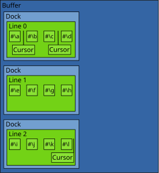

second-cluffer User's Manual
This manual is for second-cluffer version 0.1.0.
Copyright © 2015 -- 2022 Robert Strandh
Copyright © 2023 -- 2025 Jan Moringen
1 Introduction
second-cluffer is a library for representing the buffer of a text editor. As such, it defines a set of Common Lisp Object System protocols for client code to interact with the buffer contents in various ways, and it supplies different implementations of those protocols for different purposes.
The buffer protocols have been chosen so that they can fit a variety of editors. As a consequence, they are not particularly Emacs-centric. For example, in Emacs, a newline character is just another character, so that moving past it using the forward-char command changes the line in which point is located, and using the delete-char command when point is to the left of a newline character joins the line to the next one.
In contrast, the buffer protocols documented here are line oriented and there is no newline character; only a sequence of lines. At some level, it is of course desirable to have Emacs-compatible commands, but these commands are written separately, using this buffer protocol to accomplish the effects. For example, the Emacs-compatible forward-item command (which this library does not provide; see https://github.com/scymtym/text.editing for a possible implementation) checks whether it is at the end of a line, and if so, detaches the cursor from that line and attaches it to the next one. Similarly, the Emacs compatible delete-item command calls second-cluffer:join-line in the buffer protocol to obtain the desired effect when it is at the end of a line.

By writing the editor commands in two levels like this, we hope it will be easier to use the buffer protocols to write emulators for other editors, such as VIM.
The buffer participates in two different buffer protocols:
The edit protocol, used by client editing and cursor-motion operations.
The update protocol, used by redisplay operations to determine what items are contained in the buffer.
The operations in the edit protocol were designed to be fast (typically around 10 µs so that it is practical to use these TODO we should support operations in a loop, say to insert or delete a region, or to accomplish several operations inside a keyboard macro. The exceptions are the operations second-cluffer:split and second-cluffer:join that take time proportional to the number of items in the second line. 1
The operations in the update protocol were designed to be called at the frequency of the event loop of an application, typically once for each character typed, but also when a window is resized or scrolled (in which case, these operations are very fast since no modifications to the buffer have occurred).
The buffer edit protocols expose two levels of abstraction to client code:
The buffer level represents the sequence of lines independently of how the individual lines are represented.
The line level represents individual lines.
As mentioned above, the buffer protocols do not pretend to manage any equivalence between line breaks and some sequence of characters. It is up to client code to model such an equivalence if desired. As a consequence, the buffer protocols do not allow for a cursor at the beginning of a line to move backward or a cursor at the end of a line to move forward. An attempt at doing so will result in an error being signaled. If client code wants to impose a model where the line break corresponds to (say) the newline character, then it must explicitly detach and reattach the cursor to a different line in these cases. It can manage that in two different ways: either by explicitly testing for TODO:beginning-of-line or TODO:end-of-line before calling the equivalent buffer function, or by handling the error that results from the attempt.
The buffer also does not interpret the meaning of any of items contained in it. For instance, whether an item is to be considered part of a word or not, is not decided at the buffer level, but at the level of the syntax. As a consequence, the buffer protocol does not offer any functions that require such interpretation, such as forward-word, end-of-paragraph, etc.
2 External Protocols
2.1 Packages
All symbols in the external protocol are in the package named second-cluffer. We recommend against client code using this package in the sense of the :use option to defpackage or in the sense of calling use-package. The reason for this recommendation is that we can not guarantee that future additions to this library will not define external symbols that conflict with symbols in the common-lisp package or symbols used by the client for other purposes.
Instead, we recommend that client code use explicit package prefixes, which in addition will make the origin of the symbol obvious from the source code. If, for some reason, it is not desirable to use explicit package prefixes, we suggest selectively importing the desired symbols.
2.2 Conditions
second-cluffer defines a number of conditions that are signaled when second-cluffer is unable to fulfill the contract stipulated by the protocol function being used.
This condition type is the base of all error conditions signaled by second-cluffer. Client code that wishes to handle all error conditions signaled by second-cluffer may use this condition in its condition handlers.
This condition is signaled when an attempt is made to use a cursor in an operation that requires that cursor to be detached, but the cursor used in the operation is attached to a line.
This condition is signaled when an attempt is made to use a cursor in an operation that requires that cursor to be attached, but the cursor used in the operation is not attached to any line.
This condition is signaled when an attempt is made to compare two cursors which are each attached to a line but the lines do not belong to the same buffer. The readers cursor1 and cursor2 can be used to obtain the offending cursor objects.
This condition is signaled when an attempt is made to use an index that is negative, either by moving a cursor there, or by attempting to access an item at such an index.
This condition is signaled when an attempt is made to use an index that is too large, either by moving a cursor there, or by attempting to access an item at such an index. Notice that in some cases, ``too large'' means ``strictly greater than the number of items in a line'', and sometimes it means ``greater than or equal to the number of items in a line''. For example, it is perfectly acceptable to move a cursor to an index that is equal to the number of items in a line, but it is not acceptable to attempt to access an item in a line at that index.
This condition is signaled when an attempt is made to use a line number that is negative, for example by issuing a ``previous line'' or ``goto line'' cursor movement command for which the target line number that gets passed to second-cluffer:find-line is negative.
This condition is signaled when an attempt is made to use a line number that is too large, for example by issuing a ``next line'' or ``goto line'' cursor movement command for which the target line number that gets passed to second-cluffer:find-line is larger than the number of lines in the buffer.
This condition is signaled when an attempt is made to use a line in an operation that requires the line to be attached to a buffer, but the line used in the operation is not attached to a buffer. An example of such an operation would be to attempt to get the line number of the line, given that the line number of a line is determined by the buffer to which the line is attached.
2.3 Protocol Classes
This class is the base class for all lines. It should not itself be instantiated. Instead, second-cluffer contains two different modules each supplying a different subclass of line that can be instantiated.
This is the base class for all cursors.
This is the base class for all buffers. It should not itself be instantiated. Instead, second-cluffer contains different modules, each providing a different subclass of this class that can be instantiated.
By default, it is recommended that client code instantiate the class second-cluffer.standard-buffer:buffer.
2.4 Location Comparison Protocol
Cursors which are attached to lines which belong to the same buffer can be lexicographically ordered based on their line numbers and within-line indices. The functions in this protocol allow comparing cursor objects according to this order.
This functions in this protocol perform checks for invalid arguments, group their arguments into one or more binary operator applications, flip the comparison direction where necessary and then call functions in the 3.1 Location Comparison Implementation Protocol which implement the core behavior based on the classes of the supplied cursors.
&rest more-cursorsReturn true if for each adjacent pair of cursors in the sequence of cursors consisting of cursor followed by more-cursors, is positioned before in the buffer. This function calls the generic function second-cluffer.implementation:location< for each such pair to check whether the property holds. As a consequence, return true if only cursor is supplied.
If any of the is not currently attached to a line, a condition of type second-cluffer:cursor-detached-error is signaled. Unless all are attached to lines which belong to the same buffer, a condition of type second-cluffer:cursors-not-comparable-error is signaled.
&rest more-cursorsReturn true if for each adjacent pair of cursors in the sequence of cursors consisting of cursor followed by more-cursors, is positioned before or at the same location as in the buffer. This function calls the generic function second-cluffer.implementation:location<= for each such pair to check whether the property holds. As a consequence, return true if only cursor is supplied.
If any of the is not currently attached to a line, a condition of type second-cluffer:cursor-detached-error is signaled. Unless all are attached to lines which belong to the same buffer, a condition of type second-cluffer:cursors-not-comparable-error is signaled.
&rest more-cursorsReturn true if all cursors in the sequence of cursors consisting of cursor followed by more-cursors are positioned at the same location in the buffer. This function calls the generic function second-cluffer.implementation:location= for pairs of cursors to check whether the property holds. As a consequence, return true if only cursor is supplied.
If any of the is not currently attached to a line, a condition of type second-cluffer:cursor-detached-error is signaled. Unless all are attached to lines which belong to the same buffer, a condition of type second-cluffer:cursors-not-comparable-error is signaled.
&rest more-cursorsReturn true if no two cursors in the sequence of cursors consisting of cursor followed by more-cursors are positioned at the same location in the buffer. This function calls the generic function second-cluffer.implementation:location= for all pairs of cursors to check whether the property is violated. As a consequence, return true if only cursor is supplied.
If any of the is not currently attached to a line, a condition of type second-cluffer:cursor-detached-error is signaled. Unless all are attached to lines which belong to the same buffer, a condition of type second-cluffer:cursors-not-comparable-error is signaled.
&rest more-cursorsReturn true if for each adjacent pair of cursors in the sequence of cursors consisting of cursor followed by more-cursors, is positioned after or at the same location as in the buffer. This function calls the generic function second-cluffer.implementation:location< for each such pair to check whether the property is violated. As a consequence, return true if only cursor is supplied.
If any of the is not currently attached to a line, a condition of type second-cluffer:cursor-detached-error is signaled. Unless all are attached to lines which belong to the same buffer, a condition of type second-cluffer:cursors-not-comparable-error is signaled.
&rest more-cursorsReturn true if for each adjacent pair of cursors in the sequence of cursors consisting of cursor followed by more-cursors, is positioned strictly after in the buffer. This function calls the generic function second-cluffer.implementation:location<= for each such pair to check whether the property is violated. As a consequence, return true if only cursor is supplied.
If any of the is not currently attached to a line, a condition of type second-cluffer:cursor-detached-error is signaled. Unless all are attached to lines which belong to the same buffer, a condition of type second-cluffer:cursors-not-comparable-error is signaled.
2.5 Item Container Protocol
The generic functions in this protocol can be applied to second-cluffer:cursor instances and second-cluffer:line instances and second-cluffer:buffer instances.
The functions in this protocol perform checks for invalid arguments and invalid state then call the generic functions of the 3.2 Item Container Implementation Protocol to perform the core behavior based on the class of the supplied container.
If container is an attached cursor, return the number of items in the line to which container is attached. If container is a cursor that is not currently attached to a line, a condition of type second-cluffer:cursor-detached-error is signaled.
If container is a line, then return the number of items in that line.
If container is a buffer, then return the total number of items in that buffer.
&optional start endReturn the items of container as a vector.
The optional parameters start and end have the same interpretation as for the cl:subseq function.
TODO really for cursor? if so, handle detached case
If container is a buffer and start and end select only a small sub-sequence of all items, the function will likely require a similar amount of computation as selecting all items. The reason is that second-cluffer does not contain an efficient way of mapping linear indices like start and end to the respective line which contains that linear index.
2.6 Line Number Protocol
The generic functions in this protocol can be applied to second-cluffer:cursor instances and second-cluffer:line instances.
Return the line number of thing.
If thing is a cursor and that cursor is attached to a line, then the generic function second-cluffer:line is called with thing as its argument and the return value is used as the argument in a recursive call to line-number which behaves as described below. If thing is a cursor and that cursor is not attached to any line, a condition of type second-cluffer:cursor-detached-error is signaled.
If thing is a line and that line is attached to a buffer, then the line number of line in that buffer is returned. The first line of the buffer has the number . TODO: why not error? If thing is a line and that line is not attached to a buffer, then nil is returned.
2.7 Line Link Protocol
The generic functions in this protocol can be applied to second-cluffer:cursor instances.
TODO what else besides cursor?
Return the line in which thing is located.
TODO explain nil
If cursor is not currently attached to a line, a condition of type second-cluffer:cursor-detached-error is signaled. TODO
2.8 Buffer Link Protocol
This protocol allows obtaining the buffer, if any, to which an object is directly or indirectly attached. The generic functions in this protocol can be applied to second-cluffer:cursor instances and second-cluffer:line instances.
Return the buffer to which thing is directly or indirectly attached.
If thing is an attached cursor, then return the buffer of the line to which the cursor is attached. If thing is a cursor that is not currently attached to a line, a condition of type second-cluffer:cursor-detached-error is signaled.
If thing is a an attached line, then return the buffer to which the line is attached. If thing is a line that is not currently attached to a buffer, a condition of type second-cluffer:line-detached-error is signaled.
TODO code comment says returns nil
2.9 Cursor Protocol
2.9.1 Cursor Attachment
Return true if cursor is attached to a line.
&optional (index 0)Attach cursor to line at index.
If index is supplied and it is greater than the number of items in line, the second-cluffer:end-of-line-error is signaled. If cursor is already attached to a line, second-cluffer:cursor-attached-error is signaled.
This function typically calls second-cluffer.implementation:attach to actually perform the operation.
Detach cursor from the line to which it is attached.
If cursor is already detached, a condition of type second-cluffer:cursor-detached-error is signaled.
This function typically calls second-cluffer.implementation:detach to actually perform the operation.
2.9.2 Cursor Location
Return the index of cursor in the line to which it is attached.
If cursor is not currently attached to a line, a condition of type second-cluffer:cursor-detached-error is signaled.
Set the index of cursor to new-value in the line to which cursor is attached.
If cursor is not currently attached to a line, a condition of type second-cluffer:cursor-detached-error is signaled.
If new-value is negative, then a condition of type second-cluffer:beginning-of-line-error is signaled. If new-value is strictly greater than the number of items in the line to which cursor is attached (See second-cluffer:item-count), then a condition of type second-cluffer:end-of-line-error is signaled.
Return true if and only if cursor is located at the beginning of the line to which cursor is attached.
If cursor is not currently attached to a line, a condition of type second-cluffer:cursor-detached-error is signaled.
Calling this function is equivalent to calling the function second-cluffer:index with cursor as argument and comparing the return value to . However, this function might be implemented differently for reasons of performance.
Return true if and only if cursor is located at the end of the line to which cursor is attached.
If cursor is not currently attached to a line, a condition of type second-cluffer:cursor-detached-error is signaled.
Calling this function is equivalent to calling the function second-cluffer:index with cursor as argument and comparing the return value to the number of items in the line to which cursor is attached (See second-cluffer:item-count). However, this function might be implemented differently for reasons of performance.
Return true if and only if cursor is located at the beginning of the buffer to which cursor is indirectly attached.
If cursor is not currently attached to a line, a condition of type second-cluffer:cursor-detached-error is signaled. If cursor is attached to a line, but that line is not attached to a buffer, a condition of type second-cluffer:line-detached-error is signaled.
Return true if and only if cursor is located at the end of the buffer to which cursor is indirectly attached.
If cursor is not currently attached to a line, a condition of type second-cluffer:cursor-detached-error is signaled. If cursor is attached to a line, but that line is not attached to a buffer, a condition of type second-cluffer:line-detached-error is signaled.
2.9.3 Cursor Movement
Move cursor forward one index.
If cursor is not currently attached to a line, a condition of type second-cluffer:cursor-detached-error is signaled.
Calling this function is equivalent to incrementing the second-cluffer:index of cursor. However, this function might be implemented differently for reasons of performance.
Move cursor backward one index.
If cursor is not currently attached to a line, a condition of type second-cluffer:cursor-detached-error is signaled.
Calling this function is equivalent to decrementing the second-cluffer:index of cursor. However, this function might be implemented differently for reasons of performance.
Position cursor at the very beginning of the line to which it is attached.
If cursor is not currently attached to a line, a condition of type second-cluffer:cursor-detached-error is signaled.
Calling this function is equivalent to calling the function second-cluffer:(setf index) with and cursor as arguments. However, this function might be implemented differently for reasons of performance.
Position cursor at the very end of the line to which it is attached.
If cursor is not currently attached to a line, a condition of type second-cluffer:cursor-detached-error is signaled.
Calling this function is equivalent to calling the function second-cluffer:(setf index) with the number of items in the line to which cursor is attached (See second-cluffer:item-count) and cursor as arguments. However, this function might be implemented differently for reasons of performance.
2.9.4 Cursor Items
Return the item located immediately before cursor.
If cursor is not currently attached to a line, a condition of type second-cluffer:cursor-detached-error is signaled.
If cursor is positioned at the beginning of the line it is attached to, signal a condition of type second-cluffer:beginning-of-line-error.
Calling this function is equivalent to calling second-cluffer:item with the line to which cursor is attached (See second-cluffer:line) and the index of cursor (See second-cluffer:index) minus one. However, this function normally calls second-cluffer.implementation:item-before and the implementation performs the operation in an opaque way that allows for better performance or meets other requirements.
Return the item located immediately after cursor.
If cursor is not currently attached to a line, a condition of type second-cluffer:cursor-detached-error is signaled.
If cursor is positioned at the end of the line it is attached to, signal a condition of type second-cluffer:end-of-line-error.
Calling this function is equivalent to calling second-cluffer:item with the line to which cursor is attached (See second-cluffer:line) and the index of cursor (See second-cluffer:index). However, this function normally calls second-cluffer.implementation:item-after and the implementation performs the operation in an opaque way that allows for better performance or meets other requirements.
Insert item at the index of cursor. TODO: return value
If cursor is not currently attached to a line, a condition of type second-cluffer:cursor-detached-error is signaled.
Calling this function is equivalent to calling second-cluffer:insert-item with the line to which cursor is attached, item, and the index of cursor. However, this function normally calls second-cluffer.implementation:delete-item-after and the implementation performs the operation in an opaque way that allows for better performance or meets other requirements.
Delete the item immediately before cursor. TODO: return value
If cursor is not currently attached to a line, a condition of type second-cluffer:cursor-detached-error is signaled.
Calling this function is equivalent to calling second-cluffer:delete-item with the line to which cursor is attached and the index of cursor minus one. However, this function normally calls second-cluffer.implementation:delete-item-before and the implementation performs the operation in an opaque way that allows for better performance or meets other requirements.
Delete the item immediately after cursor. TODO: return value
If cursor is not currently attached to a line, a condition of type second-cluffer:cursor-detached-error is signaled.
Calling this function is equivalent to calling second-cluffer:delete-item with the line to which cursor is attached and the index of cursor. However, this function might be implemented differently for reasons of performance.
If cursor is not currently attached to a line, a condition of type second-cluffer:cursor-detached-error is signaled.
Calling this function is equivalent to calling second-cluffer:split, passing it the line to which cursor is attached, and the index of cursor. However, this function normally calls second-cluffer.implementation:split-using-buffer and the implementation performs the operation in an opaque way that allows for better performance or meets other requirements..
Join the line to which cursor is attached with the line following it in the buffer to which the line is attached.
If cursor is not currently attached to a line, a condition of type second-cluffer:cursor-detached-error is signaled. If cursor is attached to the last line of the buffer, the condition second-cluffer:end-of-buffer-error will be signaled.
Calling this function is equivalent to calling second-cluffer:join, passing it the line to which cursor is attached, and the index of cursor. However, this function normally calls second-cluffer.implementation:join-using-buffer and the implementation performs the operation in an opaque way that allows for better performance or meets other requirements..
2.10 Line Protocol
Return true if line is the first line in the buffer it is attached to.
If line is not currently attached to a buffer, a condition of type second-cluffer:line-detached-error is signaled.
Return true if line is the last in the buffer it is attached to.
If line is not currently attached to a buffer, a condition of type second-cluffer:line-detached-error is signaled.
Return a list of the cursors attached to line.
The order of the cursor objects in the returned list is unspecified. In particular, clients must not rely on the cursor objects being ordered according to their second-cluffer:index.
Furthermore, the returned list may be destructively modified by a subsequent operation on a related cursor, line or buffer object. In other words, clients that retain the returned set of cursors must copy the cursor list or otherwise transfer the cursor objects into some other container before invoking a subsequent operation.
This function typically calls second-cluffer.implementation:cursors to actually perform the operation.
Return the item located at index in line.
If index is less than zero, a condition of type second-cluffer:beginning-of-line-error is signaled. If index is greater than or equal to the number of items in line (See second-cluffer:item-count), a condition of type second-cluffer:end-of-line-error is signaled.
This function typically calls second-cluffer.implementation:item to actually perform the operation.
Insert item into line at index. TODO: return value
After this operation completes, what happens to cursors located at index before the operation depends on the class of the cursor and of line. The standard implementation provides two kinds of cursors, namely second-cluffer.standard-line:left-sticky-cursor and second-cluffer.standard-line:right-sticky-cursor. For such an implementation, after this operation completes, any left-sticky cursor located at index will be located before item, and any right-sticky cursor will be located index will be located after item.
If index is less than zero, a condition of type second-cluffer:beginning-of-line-error is signaled. If index is greater than the number of items in line (See second-cluffer:item-count), a condition of type second-cluffer:end-of-line-error is signaled.
This function typically calls second-cluffer.implementation:insert-item to actually perform the operation.
Delete the item at index in line.
If index is less than zero, a condition of type second-cluffer:beginning-of-line-error is signaled. If position is greater than or equal to the number of items in line (See second-cluffer:item-count), a condition of type second-cluffer:end-of-line-error is signaled.
This function typically calls second-cluffer.implementation:delete-item to actually perform the operation.
Split line into two lines, one of which is newly created and return the newly created line.
The first line contains the items and cursors preceding index and the second line contains the items and cursors following index.
TODO is unspecified return value good? (stated below)
After this operation, any left-sticky cursor located at index will be located at the end of the first line, and any right-sticky cursor located at index will be located at the beginning of the second line.
This operation is implemented in one of two ways:
Either the prefix is moved from the original line to a new line. In this case, the second of the two resulting lines is eq to the original one.
Or the suffix is moved from the original line to a new line. In this case, the first of the two resulting lines is eq to the original one.
However, it is not specified which of the two techniques is used, and it is not specified what value is returned from this operation.
If line is not currently attached to a buffer, a condition of type second-cluffer:line-detached-error is signaled.
To actually perform the operation, this function normally calls second-cluffer.implementation:split-using-buffer which in turn calls second-cluffer.implementation:make-line-like with line and appropriate keyword arguments to create the new line.
Join line with the line following it in the buffer to which line is attached which we will call next-line and return the remaining line.
Items and cursors from next-line are transferred to line.
If line is not currently attached to a buffer, a condition of type second-cluffer:line-detached-error is signaled.
If line is the last line of the buffer to which it is attached, a condition of type second-cluffer:end-of-buffer-error is signaled.
This function normally calls second-cluffer.implementation:join-using-buffer to actually perform the operation.
Notice that the protocols described here do not contain any delete-line operation. This design decision was made on purpose. By only providing second-cluffer:join, we guarantee that removing a line leaves a trace in the buffer in the form of a modification operation on the first of the two lines that were joined. This features is essential in order for the 2.12 Update Protocol to work correctly.
2.11 Buffer Protocol
Return the number of lines in buffer.
Return the line in the buffer with the given line-number.
If line-number is less than then the error second-cluffer:beginning-of-buffer-error is signaled. If line-number is greater than or equal to the number of lines in the buffer, then the error second-cluffer:end-of-buffer-error is signaled.
2.12 Update Protocol
The purpose of the buffer update protocol is to allow for a number of edit operations to the buffer without updating the view of the buffer. This functionality is important because a single command may result in an arbitrary number of edit operations to the buffer, and we typically want the view to be updated only once, when all those edit operations have been executed.
At the center of the update protocol is the concept of a time stamp. The nature of this time stamp is not specified, other than the fact that its value is incremented for each operation that alters the contents of the buffer. The only operation allowed by client code on a time stamp is to store it and pass it as an argument to the protocol function second-cluffer:update.
TODO
;;; The purpose of the buffer update protocol is to allow for a number ;;; of edit operations to the buffer without updating the view of the ;;; buffer. This functionality is important because a single command ;;; may result in an arbitrary number of edit operations to the ;;; buffer, and we typically want the view to be updated only once, ;;; when all those edit operations have been executed. ;;; ;;; The buffer update protocol has been designed to allow for ;;; different representations of the view. Seen from the UPDATE ;;; function, the view takes the form of four different editing ;;; operations, namely CREATE, MODIFY, SYNC, and SKIP. These editing ;;; operations are represented as functions that are supplied by ;;; client code as arguments to the UPDATE function. The editing ;;; operations only assume that the view keeps a copy of the structure ;;; of the lines of the buffer, and that this copy has a cursor that ;;; is affected by the editing operations. This cursor can be before ;;; the first line of the view, after the last line of the view, or ;;; between two lines of the view. When BUFFER is called by client ;;; code, the cursor is located before the first line of the view.
The buffer parameter is a buffer that might have been modified since the last call to update. The time parameter is the time stamp of the last time the update was called, so that the update function will report modifications since that time. In addition to time stamps, the time argument can also be nil, which is interpreted as the beginning of time. Thus, when nil is given as a value of this argument, the operations generated correspond to the creation of the buffer.
The update function returns a new time stamp to be used as the time argument in the next call to update.
The time stamp is specific to each buffer, and more importantly, to each buffer implementation. The consequences are unspecified if a time stamp returned by calling update on one buffer is used in a call to update with a different buffer.
The parameters sync, skip, modify, and create, are functions that are called by the update function. They are to be considered as edit operations on some representation of the buffer as it was after the previous call to update. The operations have the following meaning:
- sync
indicates the first unmodified line after a sequence of new or modified lines. Accordingly, this function is called once, following one or more calls to create or modify. This function is called with a single argument: the unmodified line. Client code must compare the current line of its view to the argument, and delete the current line repeatedly until the two are eq. Finally, it must make the immediately following line the current one.
- skip
indicates that a number of lines have not been subject to any modifications since the last update call. The function takes a single argument, the number of lines to skip. This function is called first to indicate that a prefix of the buffer is unmodified, or after a sync operation to indicate that that many lines following the one given as argument to the sync operation are unmodified. This operation is also called when there are unmodified lines at the end of the buffer so that the total line count of the buffer corresponds to the total number of lines mentioned in the sequence of operations.
- modify
indicates a line that has been modified. The function is called with that line as the argument. Client code must compare the current line of its view to the argument, and delete the current line repeatedly until the two are eq. It must then take whatever action is needed for the modified contents of the line, and finally it must make the immediately following line the current one.
- create
indicates a line that has been created. The function is called with that line as the argument. Client code should insert the new line at the position of the cursor, and then leave the cursor positioned immediately after the inserted line.
2.13 Convenience Functions
&key (buffer-class 'second-cluffer.standard-buffer:buffer) (line-class 'second-cluffer.standard-line:line) (cursor-class 'second-cluffer.standard-line:right-sticky-cursor)TODO: We should probably rename this to make-buffer and add an initial-contents keyword parameter
Create a buffer, a line and a cursor and return those objects as three values. The line is contained in the buffer and the cursor is attached to the line. The line does not contain any items.
buffer-class, if supplied, specifies the class of the created buffer. The default is second-cluffer.standard-buffer:buffer.
line-class, if supplied, specifies the class of the created line. The default is second-cluffer.standard-line:line.
cursor-class, if supplied, specifies the class of the created cursor. The default is second-cluffer.standard-line:right-sticky-cursor.
3 Implementation Protocols
TODO introduction
For many of the generic functions described in this chapter, default methods exist which are specialized to one of the protocol classes second-cluffer:cursor, second-cluffer:line or second-cluffer:buffer and perform the required behavior, possibly in an inefficient way, by calling other generic functions from the implementation protocols. A new implementation does not have to define methods on generic functions with such a default function but may do so anyway, for example in order to provide a more efficient implementation.
3.1 Location Comparison Implementation Protocol
The functions of the 2.4 Location Comparison Protocol perform checks for invalid arguments, group their arguments into one or more binary operator applications, flip the comparison direction where necessary and then call the generic functions of this protocol to perform the core behavior.
Return true if location1 is positioned strictly before location2 in the buffer.
All locations have to be attached to lines which in turn must all belong to a single buffer. occur. These preconditions are not checked. If these preconditions are violated, incorrect behavior or errors may
Return true if location1 is positioned before or at the same position as location2 in the buffer.
All locations have to be attached to lines which in turn must all belong to a single buffer. occur. These preconditions are not checked. If these preconditions are violated, incorrect behavior or errors may
Return true if location1 is positioned at the same position as location2 in the buffer.
All locations have to be attached to lines which in turn must all belong to a single buffer. occur. These preconditions are not checked. If these preconditions are violated, incorrect behavior or errors may
3.2 Item Container Implementation Protocol
The default methods of the 2.5 Item Container Protocol perform checks for invalid arguments and invalid state then call the generic functions of this protocol to perform the core behavior.
This protocol is implemented by line classes and buffer classes but not cursor classes since those delegate to the respective line they are attached to.
Return the number of items in container.
Return the sub-sequence of items in container designated by start and end.
start must be valid start bound for a sub-sequence of the items in container. end must be either nil or valid end bound for a sub-sequence of the items in container. These preconditions are not checked. If these preconditions are violated, incorrect behavior or errors may
3.3 Line Number Implementation Protocol
3.4 Cursor Implementation Protocol
Return either :left or :right to indicate the stickiness of cursor.
3.4.1 Cursor Attachment
Attach cursor to line at index.
cursor must not already be attached to a line. index must not be negative and has to be less than the number of items in line. These preconditions are not checked. If these preconditions are violated, incorrect behavior or errors may
Detach cursor from the line to which it is attached.
cursor has to be attached to a line. This precondition is not checked. If this precondition is violated, incorrect behavior or errors may occur.
3.4.2 Cursor Location
Return the index of cursor in the line to which it is attached.
cursor has to be attached to a line. This precondition is not checked. If this precondition is violated, incorrect behavior or errors may occur.
Set the index of cursor to new-value in the line to which cursor is attached.
cursor has to be attached to a line. new-value most not be negative or strictly greater than the number of items in the line to which cursor is attached. This precondition is not checked. If this precondition is violated, incorrect behavior or errors may occur.
Return true if and only if cursor is located at the beginning of the line to which cursor is attached.
cursor has to be attached to a line. This precondition is not checked. If this precondition is violated, incorrect behavior or errors may occur.
A default method which is specialized to second-cluffer:cursor exists. Simple implementations of the cursor protocol can therefore forego defining a method on this generic function. More sophisticated implementations might use a more optimized way of determining whether cursor is at the beginning of the line.
Return true if and only if cursor is located at the end of the line to which cursor is attached.
cursor has to be attached to a line. This precondition is not checked. If this precondition is violated, incorrect behavior or errors may occur.
A default method which is specialized to second-cluffer:cursor exists. Simple implementations of the cursor protocol can therefore forego defining a method on this generic function. More sophisticated implementations might use a more optimized way of determining whether cursor is at the end of the line.
Return true if and only if cursor is located at the end of the buffer to which cursor is indirectly attached.
cursor has to be attached to a line. That line has to be attached to a buffer. These preconditions are not checked. If these preconditions are violated, incorrect behavior or errors may
A default method which is specialized to second-cluffer:cursor exists. Simple implementations of the cursor protocol can therefore forego defining a method on this generic function. More sophisticated implementations might use a more optimized way of determining whether cursor is at the beginning of the buffer.
cursor has to be attached to a line. That line has to be attached to a buffer. These preconditions are not checked. If these preconditions are violated, incorrect behavior or errors may
A default method which is specialized to second-cluffer:cursor exists. Simple implementations of the cursor protocol can therefore forego defining a method on this generic function. More sophisticated implementations might use a more optimized way of determining whether cursor is at the end of the buffer.
3.4.3 Cursor Movement
Move cursor backward by one.
TODO return value
cursor has to be attached to a line. cursor must not be positioned at the beginning of the line it is attached to. These preconditions are not checked. If these preconditions are violated, incorrect behavior or errors may
A default method which is specialized to second-cluffer:cursor and simply decrement the second-cluffer.implementation:index of cursor exists.
Move cursor forward by one.
TODO return value
cursor has to be attached to a line. cursor must not be positioned at the end of the line it is attached to. These preconditions are not checked. If these preconditions are violated, incorrect behavior or errors may
A default method which is specialized to second-cluffer:cursor and simply increments the second-cluffer.implementation:index of cursor exists.
Move cursor to the beginning of the line it is attached to.
cursor has to be attached to a line. This precondition is not checked. If this precondition is violated, incorrect behavior or errors may occur..
A default method which is specialized to second-cluffer:cursor and simply sets the second-cluffer.implementation:index of cursor to exists.
Move cursor to the end of the line it is attached to.
cursor has to be attached to a line. This precondition is not checked. If this precondition is violated, incorrect behavior or errors may occur..
A default method which is specialized to second-cluffer:cursor and simply sets the second-cluffer.implementation:index of cursor to the second-cluffer.implementation:item-count of the line exists.
3.4.4 Cursor Items
Return the item located immediately before cursor.
cursor has to be attached to a line..
3.5 Line Implementation Protocol
Return a list of the cursors attached to line.
The order of cursor objects in the returned list is unspecified. Furthermore, the returned list may be destructively modified by a subsequent operation on a related cursor, line or buffer object.
Split line at index into two lines, line and a newly created line which is returned.
line contains the items and cursors preceding index and the newly created and returned line contains the items and cursors following index. For cursors the index of which is index, whether line or the new line will contain the cursor depends on the stickiness of the cursor: if the cursor is left-sticky, it will be contained by line, if the cursor is right-sticky, it will be contained by the new line.
Note that this function takes care only of creating the new line as well as transferring items and cursors. Any changes to the arrangement of lines within a buffer are handled by second-cluffer.implementation:split-using-buffer which typically calls this function.
To create the new line, the method on this generic function specialized to second-cluffer.standard-line:line, calls second-cluffer.implementation:make-line-like with the keyword arguments :contents, :first-line-p and :last-line-p. The method on this generic function specialized to second-cluffer.simple-line:line, calls second-cluffer.implementation:make-line-like with the keyword argument :contents.
Join line1 with line2 and return the single remaining line.
Items and cursors from line2 are transferred to line1. Note that this function takes care only of items and cursors. Any changes to the arrangement of lines within a buffer are handled by second-cluffer.implementation:join-using-buffer which typically calls this function.
&key contents first-line-p last-line-p &allow-other-keysMake and return a new line object similar to line.
The purpose of this function is to allow clients to use custom subclasses of the line classes provided by second-cluffer. To this end, the function second-cluffer.implementation:split calls this function when splitting a given line by creating a similar line object, also retaining the original line object and then distributing items and cursors between the two lines. Since the client can supply an initial line of any class when a buffer is created and control the class of lines added by splitting, the client has control over the creation of all line objects without having to interfere with the respective second-cluffer.implementation:split method.
The keyword arguments accepted by this function depend on the class of line. When line is a second-cluffer.standard-line:line, the default method on second-cluffer.implementation:split calls this function with the keyword arguments :contents, :first-line-p and :last-line-p. When line is a second-cluffer.simple-line:line, the default method on second-cluffer.implementation:split calls this function with the keyword argument :contents. For a custom line class with an associated custom method on second-cluffer.implementation:split, a different set of keyword arguments may be supplied and accepted. In general, methods on this generic function should accept the same set of initargs as is accepted by the respective line class and call cl:make-instance with the provided initargs.
3.6 Dock Protocol
3.7 Buffer Implementation Protocol
Return the number of lines in buffer.
Return the line with line number line-number in buffer.
line-number must not be negative and has to be smaller than the number of lines in buffer. This precondition is not checked. If this precondition is violated, incorrect behavior or errors may occur.
Return the line number of line within buffer.
line has to be attached to a buffer. This precondition is not checked. If this precondition is violated, incorrect behavior or errors may occur.
Split line at index into two lines, one of which is newly created and return the newly created line.
The first line contains the items and cursors preceding index and the second line contains the items and cursors following index.
line has to be attached to a buffer. This precondition is not checked. If this precondition is violated, incorrect behavior or errors may occur.
Join line with the line following it in buffer which we will call next-line and return the single remaining line.
This function normally calls second-cluffer.implementation:join with line and next-line to transfer items and cursors from next-line to line. next-line becomes detached from buffer.
line has to be attached to a buffer. line must not be the last line of buffer. These preconditions are not checked. If these preconditions are violated, incorrect behavior or errors may
3.8 Update Implementation protocol
4 Implementations
second-cluffer includes two modules each of which contains an implementation of all relevant protocols. However, the two modules are optimized for different purposes:
The ``simple'' module contains an implementation that is, as the name suggests, optimized for simplicity of its data structures, algorithms and code without any performance considerations. This module serves mainly as a reference in the sense that the behavior of other implementations can be compared to this baseline, for example in randomized tests.
The ``standard'' module contains an implementation that is optimized for high performance in most usage scenarios. To this end, the module employs more complicated data structures, caches and optimized code.
Clients of second-cluffer should generally use the standard implementation since it provides consistent performance across most usage scenarios without exposing clients to the internal complexity. This is why the convenience function second-cluffer:make-empty-buffer by default creates and returns a second-cluffer.standard-buffer:buffer which is set up to contain instances of second-cluffer.standard-line:line.
4.1 Simple Implementation
The ``simple'' implementation is distributed across two packages: second-cluffer.simple-line and second-cluffer.simple-buffer. While the two packages are intended to be used together, it is possible to use only one of those and use a different implementation for the remaining aspects.
A left-sticky cursor that works with instances of second-cluffer.simple-line:line.
A right-sticky cursor that works with instances of second-cluffer.simple-line:line.
TODO
4.2 Standard Implementation
The ``standard'' implementation is distributed across two packages: second-cluffer.standard-line and second-cluffer.standard-buffer. While the two packages are intended to be used together, it is possible to use only one of those and use a different implementation for the remaining aspects.
A left-sticky cursor that works with instances of second-cluffer.standard-line:line.
A right-sticky cursor that works with instances of second-cluffer.standard-line:line.
TODO
The simplest way to create a correctly configured instance of this class is the convenience function second-cluffer:make-empty-buffer.
Concept Index
- left-sticky
- First occurence in section 2.10 Line Protocol
- Second occurence in section 2.10 Line Protocol
- Third occurence in section 3.4 Cursor Implementation Protocol
- Fourth occurence in section 3.5 Line Implementation Protocol
- Fifth occurence in section 4.1 Simple Implementation
- Sixth occurence in section 4.2 Standard Implementation
- right-sticky
- First occurence in section 2.10 Line Protocol
- Second occurence in section 2.10 Line Protocol
- Third occurence in section 3.4 Cursor Implementation Protocol
- Fourth occurence in section 3.5 Line Implementation Protocol
- Fifth occurence in section 4.1 Simple Implementation
- Sixth occurence in section 4.2 Standard Implementation
- stickiness
- time stamp
- One occurence in section 2.12 Update Protocol
Function and Macro and Variable and Type Index
- (setf dock) [second-cluffer.implementation]
- One occurence in section 3.5 Line Implementation Protocol
- (setf index) [second-cluffer.implementation]
- One occurence in section 3.4.2 Cursor Location
- (setf index) [second-cluffer]
- One occurence in section 2.9.2 Cursor Location
- attach [second-cluffer.implementation]
- One occurence in section 3.4.1 Cursor Attachment
- attach [second-cluffer]
- One occurence in section 2.9.1 Cursor Attachment
- attachedp [second-cluffer]
- One occurence in section 2.9.1 Cursor Attachment
- backward-item [second-cluffer.implementation]
- One occurence in section 3.4.3 Cursor Movement
- backward-item [second-cluffer]
- One occurence in section 2.9.3 Cursor Movement
- beginning-of-buffer-error [second-cluffer]
- One occurence in section 2.2 Conditions
- beginning-of-buffer-p [second-cluffer.implementation]
- One occurence in section 3.4.2 Cursor Location
- beginning-of-buffer-p [second-cluffer]
- One occurence in section 2.9.2 Cursor Location
- beginning-of-line [second-cluffer.implementation]
- One occurence in section 3.4.3 Cursor Movement
- beginning-of-line [second-cluffer]
- One occurence in section 2.9.3 Cursor Movement
- beginning-of-line-error [second-cluffer]
- One occurence in section 2.2 Conditions
- beginning-of-line-p [second-cluffer.implementation]
- One occurence in section 3.4.2 Cursor Location
- beginning-of-line-p [second-cluffer]
- One occurence in section 2.9.2 Cursor Location
- buffer [second-cluffer.simple-buffer]
- One occurence in section 4.1 Simple Implementation
- buffer [second-cluffer.standard-buffer]
- One occurence in section 4.2 Standard Implementation
- buffer [second-cluffer]
- First occurence in section 2.3 Protocol Classes
- Second occurence in section 2.8 Buffer Link Protocol
- cluffer-error [second-cluffer]
- One occurence in section 2.2 Conditions
- cursor [second-cluffer]
- One occurence in section 2.3 Protocol Classes
- cursor-attached-error [second-cluffer]
- One occurence in section 2.2 Conditions
- cursor-detached-error [second-cluffer]
- One occurence in section 2.2 Conditions
- cursors [second-cluffer.implementation]
- One occurence in section 3.5 Line Implementation Protocol
- cursors [second-cluffer]
- One occurence in section 2.10 Line Protocol
- cursors-not-comparable-error [second-cluffer]
- One occurence in section 2.2 Conditions
- delete-item [second-cluffer.implementation]
- One occurence in section 3.5 Line Implementation Protocol
- delete-item [second-cluffer]
- One occurence in section 2.10 Line Protocol
- delete-item-after [second-cluffer.implementation]
- One occurence in section 3.4.4 Cursor Items
- delete-item-after [second-cluffer]
- One occurence in section 2.9.4 Cursor Items
- delete-item-before [second-cluffer.implementation]
- One occurence in section 3.4.4 Cursor Items
- delete-item-before [second-cluffer]
- One occurence in section 2.9.4 Cursor Items
- detach [second-cluffer.implementation]
- One occurence in section 3.4.1 Cursor Attachment
- detach [second-cluffer]
- One occurence in section 2.9.1 Cursor Attachment
- dock [second-cluffer.implementation]
- One occurence in section 3.5 Line Implementation Protocol
- end-of-buffer-error [second-cluffer]
- One occurence in section 2.2 Conditions
- end-of-buffer-p [second-cluffer.implementation]
- One occurence in section 3.4.2 Cursor Location
- end-of-buffer-p [second-cluffer]
- One occurence in section 2.9.2 Cursor Location
- end-of-line [second-cluffer.implementation]
- One occurence in section 3.4.3 Cursor Movement
- end-of-line [second-cluffer]
- One occurence in section 2.9.3 Cursor Movement
- end-of-line-error [second-cluffer]
- One occurence in section 2.2 Conditions
- end-of-line-p [second-cluffer.implementation]
- One occurence in section 3.4.2 Cursor Location
- end-of-line-p [second-cluffer]
- One occurence in section 2.9.2 Cursor Location
- find-line [second-cluffer.implementation]
- One occurence in section 3.7 Buffer Implementation Protocol
- find-line [second-cluffer]
- One occurence in section 2.11 Buffer Protocol
- first-line-p [second-cluffer.implementation]
- One occurence in section 3.5 Line Implementation Protocol
- first-line-p [second-cluffer]
- One occurence in section 2.10 Line Protocol
- forward-item [second-cluffer.implementation]
- One occurence in section 3.4.3 Cursor Movement
- forward-item [second-cluffer]
- One occurence in section 2.9.3 Cursor Movement
- index [second-cluffer.implementation]
- One occurence in section 3.4.2 Cursor Location
- index [second-cluffer]
- One occurence in section 2.9.2 Cursor Location
- insert-item [second-cluffer.implementation]
- One occurence in section 3.5 Line Implementation Protocol
- insert-item [second-cluffer]
- One occurence in section 2.10 Line Protocol
- insert-item-at [second-cluffer.implementation]
- One occurence in section 3.4.4 Cursor Items
- insert-item-at [second-cluffer]
- One occurence in section 2.9.4 Cursor Items
- item [second-cluffer.implementation]
- One occurence in section 3.5 Line Implementation Protocol
- item [second-cluffer]
- One occurence in section 2.10 Line Protocol
- item-after [second-cluffer.implementation]
- One occurence in section 3.4.4 Cursor Items
- item-after [second-cluffer]
- One occurence in section 2.9.4 Cursor Items
- item-before [second-cluffer.implementation]
- One occurence in section 3.4.4 Cursor Items
- item-before [second-cluffer]
- One occurence in section 2.9.4 Cursor Items
- item-count [second-cluffer.implementation]
- One occurence in section 3.2 Item Container Implementation Protocol
- item-count [second-cluffer]
- One occurence in section 2.5 Item Container Protocol
- items [second-cluffer.implementation]
- One occurence in section 3.2 Item Container Implementation Protocol
- items [second-cluffer]
- One occurence in section 2.5 Item Container Protocol
- join [second-cluffer.implementation]
- One occurence in section 3.5 Line Implementation Protocol
- join [second-cluffer]
- One occurence in section 2.10 Line Protocol
- join-line [second-cluffer]
- One occurence in section 2.9.4 Cursor Items
- join-using-buffer [second-cluffer.implementation]
- One occurence in section 3.7 Buffer Implementation Protocol
- last-line-p [second-cluffer.implementation]
- One occurence in section 3.5 Line Implementation Protocol
- last-line-p [second-cluffer]
- One occurence in section 2.10 Line Protocol
- left-sticky-cursor [second-cluffer.simple-line]
- One occurence in section 4.1 Simple Implementation
- left-sticky-cursor [second-cluffer.standard-line]
- One occurence in section 4.2 Standard Implementation
- line [second-cluffer.simple-line]
- One occurence in section 4.1 Simple Implementation
- line [second-cluffer.standard-line]
- One occurence in section 4.2 Standard Implementation
- line [second-cluffer]
- First occurence in section 2.3 Protocol Classes
- Second occurence in section 2.7 Line Link Protocol
- line-count [second-cluffer.implementation]
- One occurence in section 3.7 Buffer Implementation Protocol
- line-count [second-cluffer]
- One occurence in section 2.11 Buffer Protocol
- line-detached-error [second-cluffer]
- One occurence in section 2.2 Conditions
- line-number [second-cluffer.implementation]
- One occurence in section 3.3 Line Number Implementation Protocol
- line-number [second-cluffer]
- One occurence in section 2.6 Line Number Protocol
- line-number-using-buffer [second-cluffer.implementation]
- One occurence in section 3.7 Buffer Implementation Protocol
- location/= [second-cluffer]
- One occurence in section 2.4 Location Comparison Protocol
- location< [second-cluffer.implementation]
- One occurence in section 3.1 Location Comparison Implementation Protocol
- location< [second-cluffer]
- One occurence in section 2.4 Location Comparison Protocol
- location<= [second-cluffer.implementation]
- One occurence in section 3.1 Location Comparison Implementation Protocol
- location<= [second-cluffer]
- One occurence in section 2.4 Location Comparison Protocol
- location= [second-cluffer.implementation]
- One occurence in section 3.1 Location Comparison Implementation Protocol
- location= [second-cluffer]
- One occurence in section 2.4 Location Comparison Protocol
- location> [second-cluffer]
- One occurence in section 2.4 Location Comparison Protocol
- location>= [second-cluffer]
- One occurence in section 2.4 Location Comparison Protocol
- make-empty-buffer [second-cluffer]
- One occurence in section 2.13 Convenience Functions
- make-line-like [second-cluffer.implementation]
- One occurence in section 3.5 Line Implementation Protocol
- note-line-changed [second-cluffer.implementation]
- One occurence in section 3.6 Dock Protocol
- right-sticky-cursor [second-cluffer.simple-line]
- One occurence in section 4.1 Simple Implementation
- right-sticky-cursor [second-cluffer.standard-line]
- One occurence in section 4.2 Standard Implementation
- split [second-cluffer.implementation]
- One occurence in section 3.5 Line Implementation Protocol
- split [second-cluffer]
- One occurence in section 2.10 Line Protocol
- split-line [second-cluffer]
- One occurence in section 2.9.4 Cursor Items
- split-using-buffer [second-cluffer.implementation]
- One occurence in section 3.7 Buffer Implementation Protocol
- stickiness [second-cluffer]
- One occurence in section 3.4 Cursor Implementation Protocol
- update [second-cluffer.implementation]
- One occurence in section 3.8 Update Implementation protocol
- update [second-cluffer]
- One occurence in section 2.12 Update Protocol
Changelog
Version 1.0
Hi
Footnotes
- (1)
- We may improve on this performance in the future.